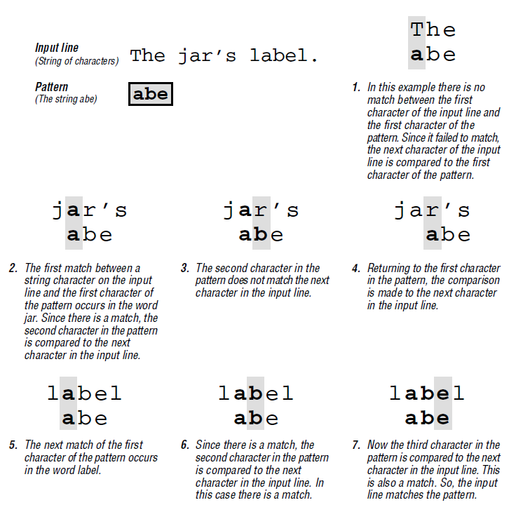

Regex
1 标准
| POSIX Extended | - IEEE 制定的标准。 |
|---|---|
| PCRE | - Perl Compatible Regular Expressions |
| - 用 C 语言编写的正则表达式函数库，广泛用于开源软件。 |
2 原理

3 字符
3.1 Meta 字符
- Meta 字符都表示特殊的含义，需要表示本身的含义时用
\转义。 - 除 meta 字符以外的其他字符，在正则表达式中都被视为它们本身。
| BRE | ^ $ . [] * |
|---|---|
| ERE | {} () ? + | |
| 转义字符 | \ |
3.2 分隔符
| Linux 命令行中 | '' |
|---|---|
| PHP 函数中 | / # ~ |
4 BRE
- Basic Regular Expression
- 所有符合 POSIX 标准的程序都支持的正则表达式。
. |
匹配任意一个字符 |
|---|---|
| Anchor | |
^ |
匹配行开头 |
$ |
匹配行结尾 |
^$ |
匹配空行 |
| 括号表达式 | |
[x] |
匹配一组字符中的任意一个 |
[^x] |
匹配除一组字符以外的字符（但不匹配空字符） |
eg. [^bg]zip 匹配除 bzip 和 gzip 以外的 .zip ，但不匹配 zip |
|
[x-y] |
匹配一个范围内的字符 |
| 字符类别 | |
[\d] |
等价于 [0-9] |
[\w] |
等价于 [A-Za-z0-9_] |
- Meta 字符除了
^和-，其他都失去特殊意义。 - 如果
-是第一个或最后一个字符，也失去特殊意义。
4.1 示例
grep -i '^..j.r$' /usr/share/dict/words
5 ERE
- Extended Regular Expression
| |
匹配几个字符串中的任意一个 | |
|---|---|---|
| 出现次数 | ||
* |
任意次 | |
? |
0 次或 1 次 | |
+ |
1 次或更多次 | |
{x} |
正好 x 次 | |
{x,} |
至少 x 次 | |
{,y} |
至多 y 次 | |
{x,y} |
x 至 y 次 | |
| 括号表达式 | ||
[: :] |
字符类别 | |
[. .] |
整理符号：多字符序列，看做一个单元 | eg. [.ch.] |
[= =] |
等价：地区化字符中的等价元素 | eg. [=e=] 匹配 e é è |
| 字符类别 | ||
[:alnum:] |
可打印字符（包括空白字符） | |
[:print:] |
可打印字符（包括空白字符） | |
[:graph:] |
可打印、可见（非空格）字符 | |
[:alpha:] |
字母 | |
[:lower:] |
小写字母 | |
[:upper:] |
大写字母 | |
[:digit:] |
数字 | |
[:xdigit:] |
十六进制数字 | |
[:punct:] |
标点符号 | |
[:blank:] |
空白字符 | |
[:space:] |
空白字符 | |
[:cntrl:] |
控制字符 |